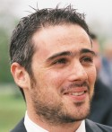

 |
|
|
|
|
Yariv Z. Levy
PhD Candidate
|
In Fall 2005, I joined the School of Computer Science at the University of Massachusetts Amherst, in order to expand my scientific knowledge and to further improve my research experience. I was co-advised by Prof. Andrew G. Barto and Prof. Jerrold S. Meyer. In Fall 2012, I have completed all the requirements and successfully defended my PhD thesis:
Y. Z. Levy (2013). Multiscale Modeling of Human Addiction: a Computational Hypothesis for Allostasis and Healing. Open Access Dissertations. Paper 720.
[download page]
Peer-Reviewed Articles
- [ NEW ]
Y. Z. Levy, D. J. Levy, A. G. Barto, J. S. Meyer (2013). A computational hypothesis for allostasis: delineation of substance dependence, conventional therapies, and alternative treatments.
Front. Psychiatry 4:167. doi: 10.3389/fpsyt.2013.00167
-
Y. Z. Levy, D. Levy, J. S. Meyer (2011). Computational Hypothesis for Maturing Out of Addiction and Mindfulness-Based Cognitive Techniques.
Proceedings of the Second Annual Meeting of the Biologically Inspired Cognitive Architectures Society (BICA 2011), Arlington, VA, November 2011.
-
Y. Z. Levy, D. Levy, J. S. Meyer, H. T. Siegelmann (2010). Identification and Control of Intrinsic Bias in a Multiscale Computational Model of Drug Addiction.
Proceedings of the 2010 Symposium on Applied Computing (ACM SAC 2010), Sierre, Switzerland, March 2010.
article : [PDF] - [@ ACM] - (Oral presentation)
track 38 : Advances in Computer Simulation ( SIM 2010)
-
Y. Z. Levy∗, D. Levy∗, J. S. Meyer, H. T. Siegelmann (2009). Drug Addiction: a Computational Multiscale Model Combining Neuropsychology, Cognition, and Behavior.
Proceedings of the International Conference on Bio-inspired Systems and Signal Processing (BIOSIGNALS 2009), Porto, Portugal, January 2009.
∗ Authors with equal contributions --- article : [PDF] - (Oral presentation)
Also appeared as: Technical Report UM-CS-2008-34, Department of Computer Science, UMass Amherst, September 2008.
-
Y. Z. Levy, D. Levy, J. S. Meyer, H. T. Siegelmann (2008). Drug Addiction as a Non-monotonic Process: a Multiscale Computational Model. Proceedings of the 13th International Conference on Biomedical Engineering (ICBME 2008), Singapore, December 2008.
Peer-Reviewed Abstracts
-
Y. Z. Levy, D. Levy, J. S. Meyer, H. T. Siegelmann (2009). Ceasing the use of narcotics without treatments in the context of a multiscale computational model of addiction.
6th annual meeting of the Society for Autonomous Neurodynamics: Principles of Autonomous Neurodynamics (SAND VI), La Jolla, CA, USA, July 2009.
abstract : [PDF] - (Oral presentation)
-
Y. Z. Levy, D. Levy, J. S. Meyer, H. T. Siegelmann (2009). Neuropsychology, cognition, and behavior of drug addiction: A non-monotonic multiscale computational model.
13th International Conference on Cognitive and Neural Systems (ICCNS 2009), Boston, MA, USA, May 2009.
abstract : [PDF] - (Oral presentation)
Technical Reports and Other Documents
- Technical Report UM-CS-2011-033, Department of Computer Science, UMass Amherst, September 2011
- Multiscale Modeling of Human Addiction: a Computational Approach to Predict Drug-Seeking Behavior, Ph.D. Dissertation Proposal, Department of Computer Science, UMass Amherst, May 2011
abstract : [PDF]complete document available upon request
- Technical Report UM-CS-2010-015, Department of Computer Science, UMass Amherst, February 2010
UM-CS-2010-015 : [PDF]
- Technical Report UM-CS-2009-002, Department of Computer Science, UMass Amherst, February 2009
- Technical Report UM-CS-2008-034, Department of Computer Science, UMass Amherst, September 2008
Service Activities
- Graduate Student Representative at the UMass Research Council (2009 - 2012)
- Graduate Student Representative at the UMass International Studies Council (2009 - 2011)
- Reviewer for NESCAI 2010
- Organizing and Scientific Committee at the 6th annual meeting of the Society for Autonomous Neurodynamics: Principles of Autonomous Neurodynamics (SAND VI), La Jolla, CA, USA (2009)
- CS Candidate week-end Committee and Volunteer (2006-2008)
- BINDS laboratory webmaster (2005-2008)
Honors
- UMass Graduate School Travel Grant 2011, 2009, and 2008
- ACM SIGAPP Student Travel Award 2010
- BIOSIGNALS 2009 Travel Grant
- Invited participant at the 2nd Okinawa Conference on Mathematics and Biology : Multi-Scale Phenomena In Biology, Okinawa Institute of Science and Technology (OIST), Okinawa, Japan, November 2008
- Departmental nomination for the 2007 IBM Ph.D. Fellowship Award
- Invited participant at the Experimental & Computational Neurodynamics Summer School, Center for Theoretical Biological Physics (CTBP), La Jolla, CA, USA, August 2005
Background
I earned my BSc and MSc degrees from the Computer Science Department at the Ecole Polytechnique Fédérale de Lausanne, in Switzerland.
During my BSc degree I learned fundamentals concepts of computer science engineering: strong mathematical knowledge and foundation of hardware and software development.
During my MSc degree I focused my curriculum in computer science related to biology: Artificial Neural Network, Genetic Systems and Programming, Bio-inspired Adaptive Machines and Bioinformatics. I decided to concentrate my studies on the field of Computational Neuroscience and I joined the Laboratory of Neural Microcircuitry under the supervision of Prof. Henry Markram.
Complete CV available upon request. Partial CV available [@ LinkedIn].
Contact
School of Computer Science
140 Governors Drive
University of Massachusetts Amherst
Amherst, MA 01003-9264
ylevy 'followed by' cs . umass . edu
|